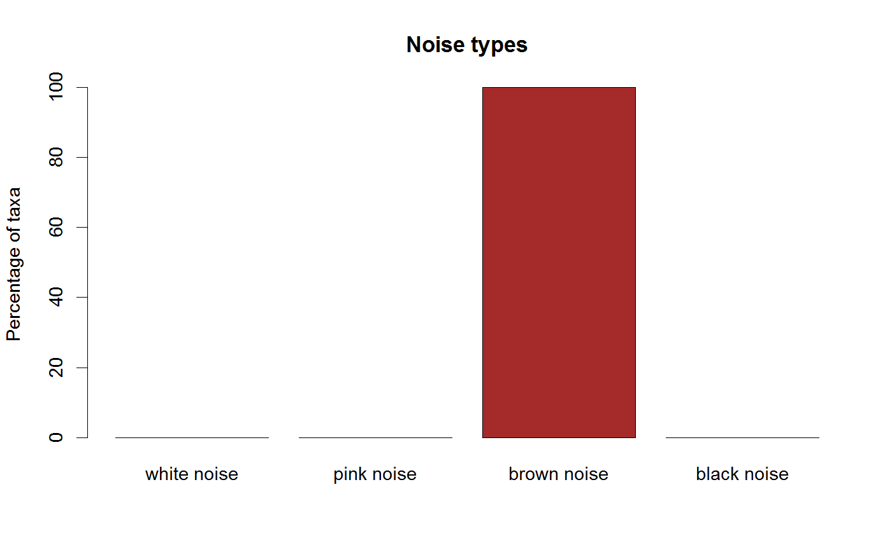

Identify noise types in a matrix row-wise. The noise type is the slope of the frequency versus the spectral density in log-log scale.
identifyNoisetypes(x, epsilon = 0.2, predef = FALSE, detrend = TRUE, pval.threshold = 0.05, smooth = FALSE, df = max(2, log10(ncol(x))), permut = FALSE, abund.threshold = 0, groups = c())
| x | a matrix with objects as rows and time points as columns |
|---|---|
| epsilon | allowed deviation from the expected slope of 0 for white noise, -1 for pink noise and -2 for brown noise (all rows with a slope below -3 are classified as having black noise) |
| predef | use predefined slope ranges to determine noise type from the periodogram; overrides epsilon (slope ranges are: black=[-INF,-2.25]; brown=[-1.75, -2.25), pink=(-1.75,-0.5], white=(-0.5,INF]) |
| detrend | remove a linear trend before computing the spectral density (recommended) |
| pval.threshold | significance threshold for periodogram powerlaw goodness of fit |
| smooth | instead of fitting a line to the frequency-spectrum power law, fit a spline with function smooth.spline and consider the minimum of its derivative as the slope. In this case, the frequency is no longer required to scale significantly with the spectral density in log-log scale. |
| df | smooth.spline parameter (degrees of freedom) |
| permut | permute time points before computing noise types |
| abund.threshold | minimum sum per row |
| groups | vector of group assignments with as many entries as x has samples, if non-empty computes frequencies and spectral densities for each group separately and compute noise type on pooled frequencies and spectral densities |
S3 noisetypes object
Row sums need to be above the given abundance threshold and the spectral density needs to scale significantly with the frequency (p-value below 0.05) in log-log scale.
The periodogram is computed with spectrum from the stats package.
The function returns a noisetypes object, which groups matrix row indices by noise type.
Note that not all rows may be assigned a noise type.
#> [1] "Adjusting connectance to 0.02" #> [1] "Initial edge number 100" #> [1] "Initial connectance 1" #> [1] "Number of edges removed 89" #> [1] "Final connectance 0.0111111111111111" #> [1] "Final connectance: 0.0111111111111111"noise <- identifyNoisetypes(ricker.out, abund.threshold=0)#> [1] "Number of taxa below the abundance threshold: 0" #> [1] "Number of taxa with non-significant power spectrum laws: 0" #> [1] "Number of taxa with non-classified power spectrum: 8" #> [1] "Number of taxa with white noise: 0" #> [1] "Number of taxa with pink noise: 1" #> [1] "Number of taxa with brown noise: 1" #> [1] "Number of taxa with black noise: 0"plotNoisetypes(noise)